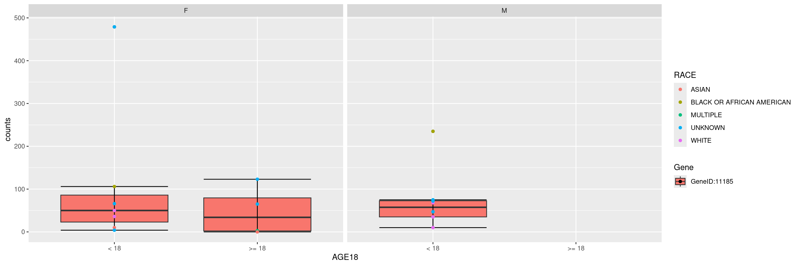
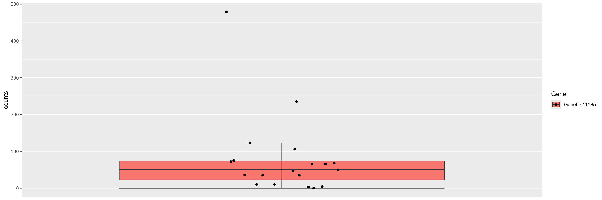
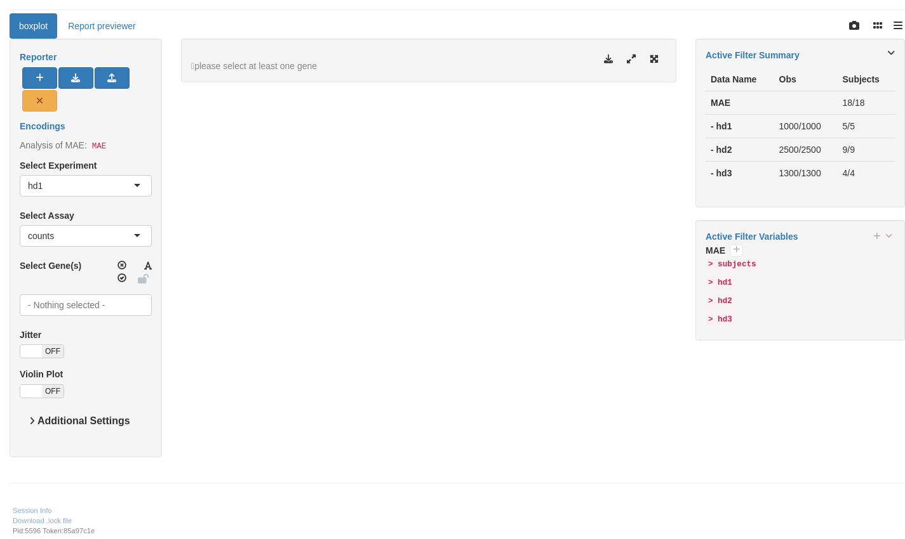

RNAG7
RNAseq Boxplot
This page can be used as a template of how to create boxplots for RNA-seq gene expression data using available hermes, and to create interactive boxplot for RNA-seq gene expression analysis using teal.modules.hermes.
The draw_boxplot() function used below needs HermesData as input. See RNAG1 for details on how to import, filter and normalize HermesData.
We can create boxplots for expression values of single genes by providing the gene ID in a gene_spec (gene specification) as follows.
We can also create boxplots for multiple genes next to each other, simply by specifying multiple gene IDs in the gene_spec. Note that names given to the gene ID vector are used in the plot instead of the IDs.
We can also specify a gene summary function for multiple genes, thereby using the corresponding gene signature. Note that here we just want to use the first 6 genes from the object without explicitly specifying the gene IDs, and this can be done through the genes() function in hermes.
We can add sample variables for stratification (x_var), faceting (facet_var) or coloring (color_var).
Code

We can also add jittering to the data points overlaying the boxplot using the jitter flag.
Code

We can also create violin plots instead of boxplots using the violin flag.
We start by importing a MultiAssayExperiment; here we use the example multi_assay_experiment available in hermes. It is wrapped as a teal::dataset. We can then use the provided teal module tm_g_boxplot to have a boxplot module in our teal app.
Code
[INFO] 2024-02-23 15:47:26.2982 pid:10889 token:[] teal.modules.hermes Initializing tm_g_boxplot[INFO] 2024-02-23 15:47:27.8947 pid:10889 token:[0f2d3bf2] teal Initializing reporter_previewer_moduleWarning: 'experiments' dropped; see 'drops()'
R version 4.3.2 (2023-10-31)
Platform: x86_64-pc-linux-gnu (64-bit)
Running under: Ubuntu 22.04.3 LTS
Matrix products: default
BLAS: /usr/lib/x86_64-linux-gnu/openblas-pthread/libblas.so.3
LAPACK: /usr/lib/x86_64-linux-gnu/openblas-pthread/libopenblasp-r0.3.20.so; LAPACK version 3.10.0
locale:
[1] LC_CTYPE=en_US.UTF-8 LC_NUMERIC=C
[3] LC_TIME=en_US.UTF-8 LC_COLLATE=en_US.UTF-8
[5] LC_MONETARY=en_US.UTF-8 LC_MESSAGES=en_US.UTF-8
[7] LC_PAPER=en_US.UTF-8 LC_NAME=C
[9] LC_ADDRESS=C LC_TELEPHONE=C
[11] LC_MEASUREMENT=en_US.UTF-8 LC_IDENTIFICATION=C
time zone: Etc/UTC
tzcode source: system (glibc)
attached base packages:
[1] stats4 stats graphics grDevices utils datasets methods
[8] base
other attached packages:
[1] teal.modules.hermes_0.1.6.9003 teal_0.15.1.9000
[3] teal.slice_0.5.0.9003 teal.data_0.5.0.9000
[5] teal.code_0.5.0.9003 shiny_1.8.0
[7] hermes_1.7.1.9000 SummarizedExperiment_1.32.0
[9] Biobase_2.62.0 GenomicRanges_1.54.1
[11] GenomeInfoDb_1.38.5 IRanges_2.36.0
[13] S4Vectors_0.40.2 BiocGenerics_0.48.1
[15] MatrixGenerics_1.14.0 matrixStats_1.2.0
[17] ggfortify_0.4.16 ggplot2_3.4.4
loaded via a namespace (and not attached):
[1] RColorBrewer_1.1-3 jsonlite_1.8.8
[3] shape_1.4.6 MultiAssayExperiment_1.28.0
[5] magrittr_2.0.3 farver_2.1.1
[7] rmarkdown_2.25 GlobalOptions_0.1.2
[9] zlibbioc_1.48.0 vctrs_0.6.5
[11] memoise_2.0.1 RCurl_1.98-1.14
[13] webshot_0.5.5 BiocBaseUtils_1.5.0
[15] htmltools_0.5.7 S4Arrays_1.2.0
[17] forcats_1.0.0 progress_1.2.3
[19] curl_5.2.0 SparseArray_1.2.3
[21] sass_0.4.8 bslib_0.6.1
[23] fontawesome_0.5.2 htmlwidgets_1.6.4
[25] testthat_3.2.1 cachem_1.0.8
[27] teal.widgets_0.4.2.9005 mime_0.12
[29] lifecycle_1.0.4 iterators_1.0.14
[31] pkgconfig_2.0.3 webshot2_0.1.1
[33] Matrix_1.6-5 R6_2.5.1
[35] fastmap_1.1.1 GenomeInfoDbData_1.2.11
[37] rbibutils_2.2.16 clue_0.3-65
[39] digest_0.6.34 colorspace_2.1-0
[41] shinycssloaders_1.0.0 ps_1.7.6
[43] AnnotationDbi_1.64.1 DESeq2_1.42.0
[45] RSQLite_2.3.5 filelock_1.0.3
[47] labeling_0.4.3 fansi_1.0.6
[49] httr_1.4.7 abind_1.4-5
[51] compiler_4.3.2 bit64_4.0.5
[53] withr_3.0.0 doParallel_1.0.17
[55] backports_1.4.1 BiocParallel_1.36.0
[57] DBI_1.2.1 logger_0.2.2
[59] biomaRt_2.58.0 rappdirs_0.3.3
[61] DelayedArray_0.28.0 rjson_0.2.21
[63] chromote_0.1.2 tools_4.3.2
[65] httpuv_1.6.13 glue_1.7.0
[67] callr_3.7.3 promises_1.2.1
[69] grid_4.3.2 checkmate_2.3.1
[71] cluster_2.1.6 generics_0.1.3
[73] gtable_0.3.4 websocket_1.4.1
[75] tidyr_1.3.1 hms_1.1.3
[77] xml2_1.3.6 utf8_1.2.4
[79] XVector_0.42.0 ggrepel_0.9.5
[81] foreach_1.5.2 pillar_1.9.0
[83] stringr_1.5.1 limma_3.58.1
[85] later_1.3.2 circlize_0.4.15
[87] dplyr_1.1.4 BiocFileCache_2.10.1
[89] lattice_0.22-5 bit_4.0.5
[91] tidyselect_1.2.0 ComplexHeatmap_2.18.0
[93] locfit_1.5-9.8 Biostrings_2.70.1
[95] knitr_1.45 gridExtra_2.3
[97] teal.logger_0.1.3.9011 edgeR_4.0.12
[99] xfun_0.41 statmod_1.5.0
[101] brio_1.1.4 stringi_1.8.3
[103] yaml_2.3.8 shinyWidgets_0.8.1
[105] evaluate_0.23 codetools_0.2-19
[107] tibble_3.2.1 cli_3.6.2
[109] xtable_1.8-4 Rdpack_2.6
[111] processx_3.8.3 jquerylib_0.1.4
[113] munsell_0.5.0 teal.reporter_0.3.0.9003
[115] Rcpp_1.0.12 dbplyr_2.4.0
[117] png_0.1-8 XML_3.99-0.16.1
[119] parallel_4.3.2 ellipsis_0.3.2
[121] assertthat_0.2.1 blob_1.2.4
[123] prettyunits_1.2.0 bitops_1.0-7
[125] scales_1.3.0 purrr_1.0.2
[127] crayon_1.5.2 GetoptLong_1.0.5
[129] rlang_1.1.3 formatR_1.14
[131] KEGGREST_1.42.0 shinyjs_2.1.0